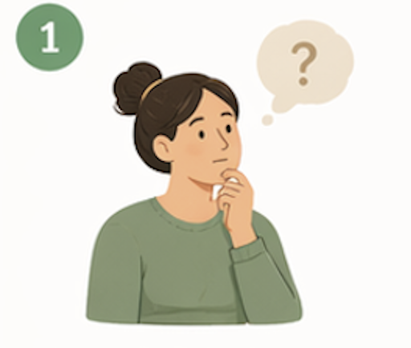
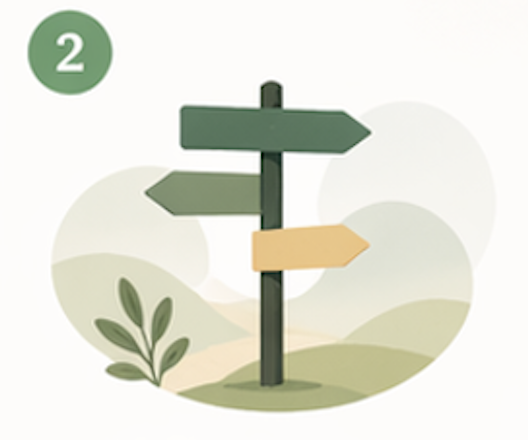
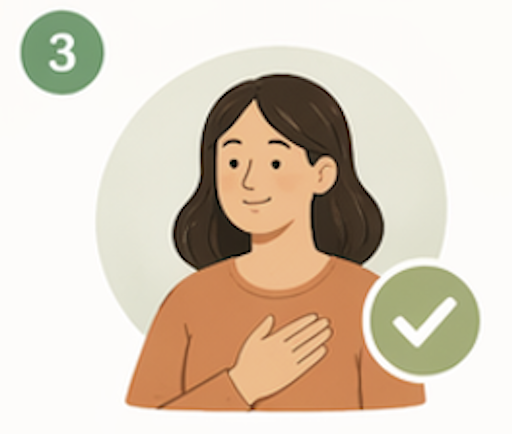
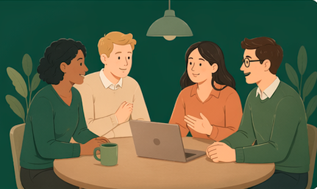
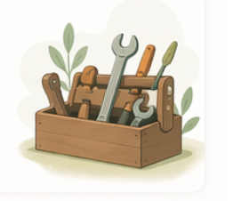

Beoordeel de situatie
Je krijgt steeds een korte vraag of dilemma uit de praktijk.
Prototype voor gemeenten en publieke dienstverleners
Een interactieve routeplanner plus onderzoekswerkbank om AI-toepassingen in de sociale zekerheid te toetsen op menselijke maat, EU-verantwoordelijkheid en uitvoerbaarheid in de praktijk.
De beslisboom stelt vragen over een situatie. Samen verken je opties en kom je tot een keuze die past bij de menselijke maat.

Je krijgt steeds een korte vraag of dilemma uit de praktijk.

De tool leidt je langs regelgeving, menselijke maat en burgerperspectief.

Je ontvangt een rapport met knelpunten, acties en vervolgstappen.
Gebruik de beslisboom als reflectietool, in teamgesprekken of bij lastige keuzes in de praktijk.
Geen registratie nodig · voortgang blijft lokaal in deze browser

Stap 1 van 5
Dit deel gaat alleen over AI Act, gegevens, besluitvorming en inkoop. Daarna ga je door naar menselijke maat.
Stap 2 van 5
Korte, concretere vragen voor ambtenaren. Beantwoord ze op basis van wat nu al geregeld is.
Stap 3 van 5
Bespreek per casus waar het proces voor mensen kan vastlopen of onmenselijk kan voelen.
Stap 4 van 5
Gebruik dit als interviewscript of quick scan van het bestaande proces.
Placeholder: later kan een taalmodel beleidsdocumenten lezen en aandachtspunten plus rapportcijfer geven.
Backend, validatie en menselijke review nodigPlaceholder: later kan een chatbot inwoners interviewen over het bestaande proces.
Consent, opslagbeleid en escalatie nodigStap 5 van 5
Dit rapport is netjes opgemaakt als Markdown en neemt de ingevulde onderdelen mee.
Kennisbank
Een compacte kennislaag voor teams die snel dezelfde taal willen spreken voordat ze de beslisboom invullen.
Wat betekent high-risk, verboden praktijk, GPAI en menselijk toezicht voor een gemeentelijk project?
Hoe vertaal je waardigheid, contact, proportionaliteit en begrijpelijkheid naar ontwerp- en proceskeuzes?
Begrippen zoals social scoring, DPIA en biometrie krijgen uitleg precies op het moment dat ze opduiken.
Inspiratiebibliotheek
De verkenner combineert meerdere methodes. Sommige werken al statisch; andere vragen later een backend.

Een gestructureerde route langs EU-regels, menselijke maat en uitvoeringsvragen.
Een korte zelfscan die laat zien waar de menselijke maat nog onvoldoende is uitgewerkt.
Worst-case users maken abstracte risico's bespreekbaar in teamgesprekken.
Toekomstmodules voor documentanalyse en burgerinterviews, pas na validatie en backend-inrichting.